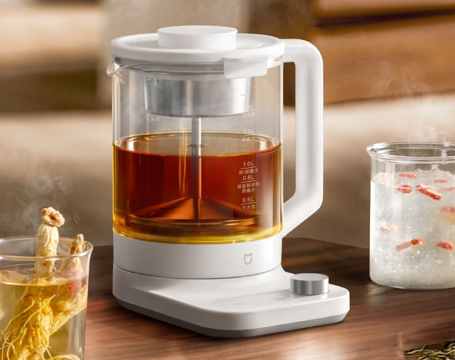
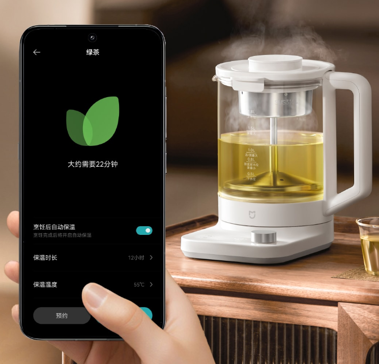

Noticia: contenido principal
Xiaomi continúa ampliando su gran y variado catálogo de productos, que va más allá de los teléfonos inteligentes. La marca de tecnología, una de las más conocidas en España, cuenta con diferentes artículos de electrónica, como una lámpara con ventilador, un potente aspirador tipo 'dyson' o un invento para tener cerveza siempre fría en verano. A ellos ahora se les suma una tetera inteligente que incluye 50 recetas y cuesta 23 euros; y que sirve para despedirse del café para siempre.
En concreto, el fabricante chino ha puesto a la venta su nueva Xiaomi Mijia Smart Multifunctional Health Kettle P1, una tetera inteligente que permite al usuario preparar de forma rápida y sencilla té y todo tipo de infusiones calientes y frías; y hasta elegir entre más de 50 recetas diferentes. Un producto que actualmente está a la venta en China por 179 yuanes, aproximadamente unos 23 euros al cambio.
Noticia: Más información
Xiaomi continúa ampliando su gran y variado catálogo de productos, que va más allá de los teléfonos inteligentes. La marca de tecnología, una de las más conocidas en España, cuenta con diferentes artículos de electrónica, como una lámpara con ventilador, un potente aspirador tipo 'dyson' o un invento para tener cerveza siempre fría en verano. A ellos ahora se les suma una tetera inteligente que incluye 50 recetas y cuesta 23 euros; y que sirve para despedirse del café para siempre. En concreto, el fabricante chino ha puesto a la venta su nueva Xiaomi Mijia Smart Multifunctional Health Kettle P1, una tetera inteligente que permite al usuario preparar de forma rápida y sencilla té y todo tipo de infusiones calientes y frías; y hasta elegir entre más de 50 recetas diferentes. Un producto que actualmente está a la venta en China por 179 yuanes, aproximadamente unos 23 euros al cambio. Una tetera inteligente que, eso sí, se espera que acabe saltando las fronteras chinas para llegar a otros mercados internacionales en un futuro, como a España. La Xiaomi Mijia Smart Multifunctional Health Kettle P1 destaca por ofrecer un diseño minimalista y compacto, repleto de una variedad de funciones. Una de sus principales características es que posee una capacidad de 1,8 litros.
Xiaomi continúa ampliando su gran y variado catálogo de productos, que va más allá de los teléfonos inteligentes. La marca de tecnología, una de las más conocidas en España, cuenta con diferentes artículos de electrónica, como una lámpara con ventilador, un potente aspirador tipo 'dyson' o un invento para tener cerveza siempre fría en verano. A ellos ahora se les suma una tetera inteligente que incluye 50 recetas y cuesta 23 euros; y que sirve para despedirse del café para siempre. En concreto, el fabricante chino ha puesto a la venta su nueva Xiaomi Mijia Smart Multifunctional Health Kettle P1, una tetera inteligente que permite al usuario preparar de forma rápida y sencilla té y todo tipo de infusiones calientes y frías; y hasta elegir entre más de 50 recetas diferentes. Un producto que actualmente está a la venta en China por 179 yuanes, aproximadamente unos 23 euros al cambio. Una tetera inteligente que, eso sí, se espera que acabe saltando las fronteras chinas para llegar a otros mercados internacionales en un futuro, como a España. La Xiaomi Mijia Smart Multifunctional Health Kettle P1 destaca por ofrecer un diseño minimalista y compacto, repleto de una variedad de funciones. Una de sus principales características es que posee una capacidad de 1,8 litros. La Xiaomi Mijia Smart Multifunctional Health Kettle P1. La Xiaomi Mijia Smart Multifunctional Health Kettle P1. Xiaomi Omicrono La nueva tetera inteligente de Xiaomi está fabricada con materiales de calidad, entre los que se encuentra el borosilicato, que es un vidrio de alta resistencia a las temperaturas. También destaca por ofrecer un sistema de calentamiento de 1.000 W de potencia y por contar con hasta 11 niveles de temperatura. Incluso permite al usuario ajustar su funcionamiento entre 40 y 90ºC.
Otras características a destacar son que la Xiaomi Mijia Smart Multifunctional Health Kettle P1 incorpora un sistema de conservación de calor durante 24 horas y dispone de conexión WiFi. De esta manera, la tetera inteligente se puede vincular a un teléfono móvil para controlarla, como encenderla y ponerla en marcha de forma remota, o para acceder a 50 recetas de bebidas diferentes.